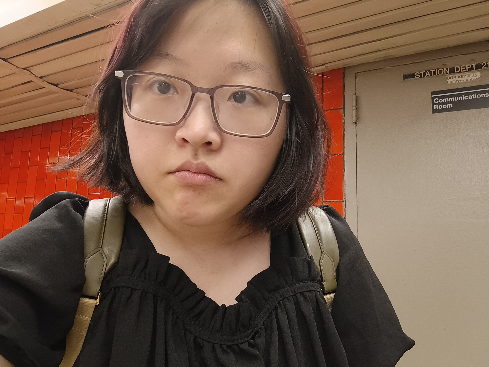

About Me

Experience & Projects
- Education: CUNY Hunter College - Expected Graduation May 2028
- Personal Website: Created and hosted a portfolio website on Github highlighting relevant coursework and projects using HTML and CSS.
- Pixel Art Drawer: Created a pixel art drawing app on the web using HTML, CSS, and Vanilla Javascript.
- CUNY Tech Prep Apprenticeship (Jul 2026 - Present): Selected as an apprentice of the full-stack web development course.
- Code2Career Participant (Feb 2026 - May 2026): Selected as one of 250 students from 1500 applicants for a 10 week mentorship with a Google Software Engineer focused on improving data structures, algorithms, and technical interviews.
Relevant Coursework & Skills
| Class | Description | Languages/Skills |
|---|---|---|
| CSCI 39548: Practical Web Development | Introduction to some of the popular tools used for fullstack web development. | HTML, CSS, Javascript |
| CSCI 23500: Software Analysis and Design 2 | Representation of information in computers, including process and data abstraction techniques. The course covers static and dynamic storage methods, lists, stacks, queues, binary trees, recursion, analysis of simple algorithms, and some searching and sorting algorithms. | C++ |
| CSCI 13500: Software Analysis and Design I | This course for prospective computer science majors and minors concentrates onproblem solving techniques using a high-level programming language. | C++ |
| CSCI 12700: Intro to Computer Science | This course presents an overview of computer science (CS) with an emphasis on problem-solving and computational thinking through ‘coding’: computer programming for beginners. Other topics include: organization of hardware, software, and how information is structured on contemporary computing devices. | Python |
Contact Me
- Email: lydiazheng001@gmail.com
- LinkedIn: www.linkedin.com/in/lydia-z-z